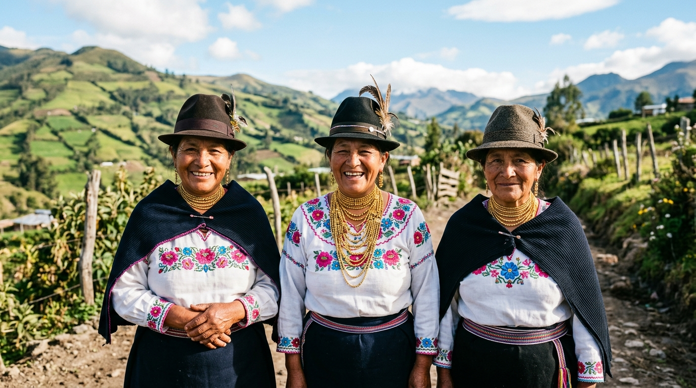
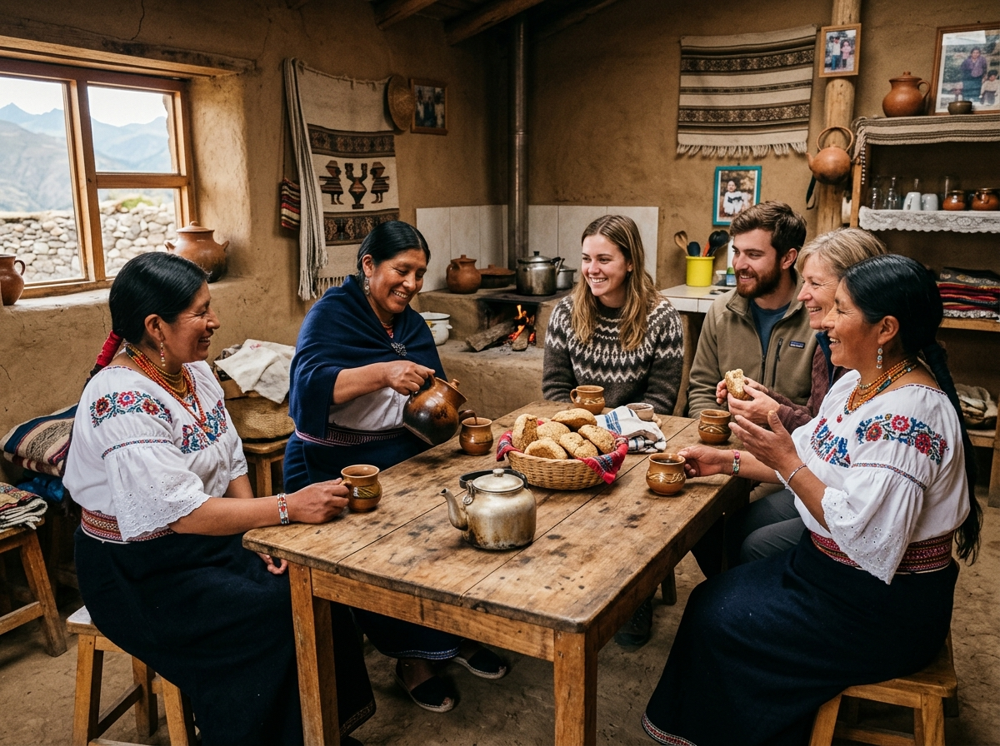
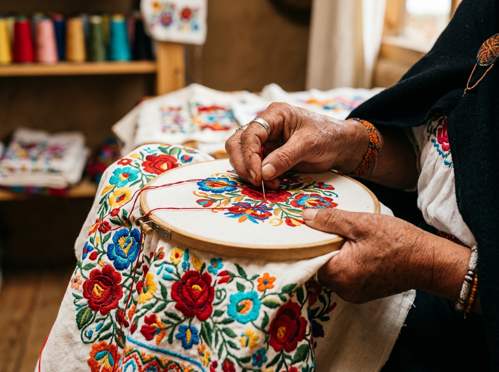
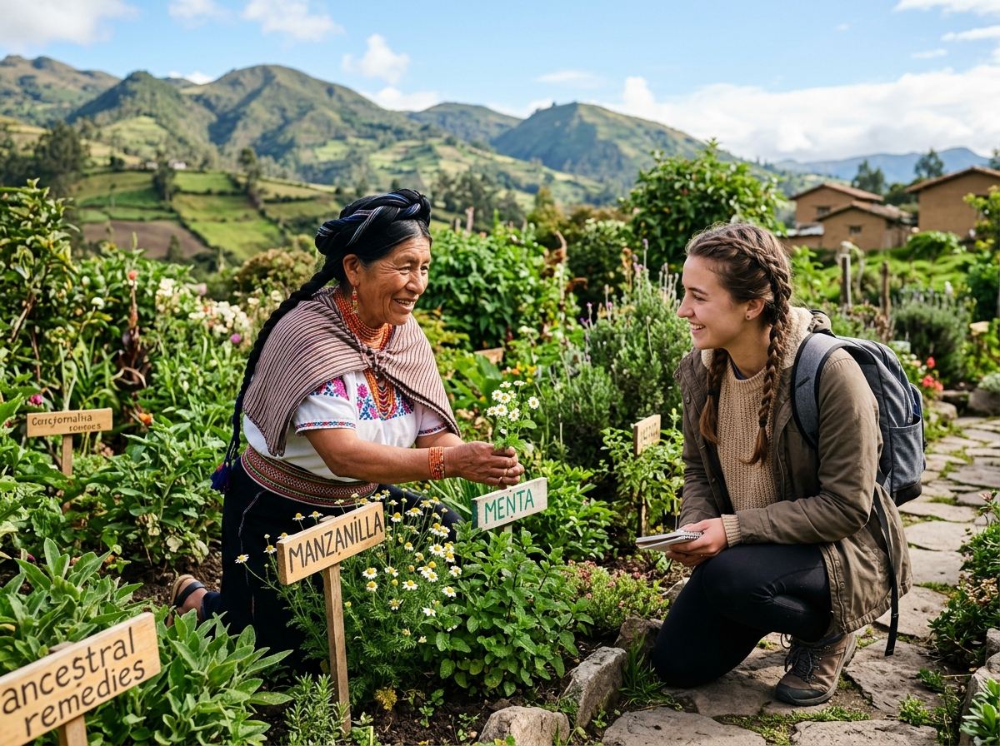

📍 Ubicación
Panamericana Norte, Kilómetro 46, Pijal – Otavalo, Imbabura, Ecuador. (A tan solo una hora y media de Quito).
🗺️ Abrir ubicación en Google MapsUna inmersión cultural de convivencia comunitaria, bordados tradicionales y medicina ancestral en Otavalo. Mira nuestro video y asegura tu cupo hoy mismo para ser parte de este cambio.

Cupos limitados por fin de semana para garantizar una convivencia íntima y respetuosa.

Conoce de cerca la vida cotidiana de nuestra comunidad y el sagrado cuidado de la tierra. Comparte momentos únicos con las familias Cayambis y aprende cómo entendemos la armonía entre el ser humano y la naturaleza.

Déjate maravillar por la paciencia y el arte de nuestros tejidos y bordados ancestrales. Presenciarás demostraciones en vivo de las Mamas, quienes plasman la cosmovisión de nuestro pueblo en hilos llenos de historia y color.

Recorre nuestros cultivos tradicionales y descubre el uso de las plantas medicinales, un conocimiento sagrado heredado de generación en generación para sanar el cuerpo y el espíritu.
Panamericana Norte, Kilómetro 46, Pijal – Otavalo, Imbabura, Ecuador. (A tan solo una hora y media de Quito).
🗺️ Abrir ubicación en Google MapsTus datos han sido registrados con éxito, viajero.
Gracias por interesarte en Sacha Warmikuna. Un miembro de nuestra comunidad (o la propia Rocío Inlago) se pondrá en contacto contigo por WhatsApp en los próximos 15 minutos para confirmar los detalles de tu visita y resolver cualquier duda sobre transporte y vestimenta.
¿No quieres esperar? Escríbenos directamente ahora mismo:
📱 Enviar WhatsApp de confirmación inmediato